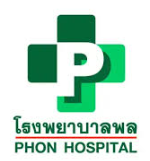

โรงพยาบาลพล (PHON HOSPITAL)
🛡️ ระบบบริหารจัดการความปลอดภัยและลาดตระเวนอัจฉริยะ
Smart Hospital Security & Real-Time Patrol Platform • เอกสารประกอบการประชุมผู้บริหาร
ระบบพัฒนาพร้อมใช้งาน 100%
แผ่นที่ 1 / 2 (ภาพรวมและเสาหลักระบบ)
รปภ. ภาคสนาม (Guard Mobile)
เว็บบนมือถือ PWA • สแกนไว ไม่ต้องลงแอป
สแกน QR จุดตรวจพร้อมเช็คลิสต์เฉพาะจุด ตรวจแม่นยำ
รองรับ 20 จุดตรวจ สแกนแล้วขึ้นรายการตรวจของจุดนั้นทันที ปักหมุด GPS ดาวเทียมจริงกันการโกง
เดินส่องทะเบียนรถต่อเนื่อง (Walk-and-Scan) 22:00/06:00 น.
เล็งป้ายทะเบียนต่อเนื่อง มี Toast ลอยมุมจอ (🟢 บุคลากร / 🟠 ภายนอก) พร้อมเสียงเตือนและสั่น
พอร์ทัลตรวจเช็กตารางเวรส่วนตัว เวรของฉัน
แสดงการ์ดเวรวันนี้ เพื่อนร่วมกะพร้อมปุ่มโทรด่วน สรุปยอดเวรทั้งเดือน และสมุดโทรศัพท์เพื่อน รปภ.
ปุ่มแจ้งเหตุด่วนและโทรฉุกเฉิน 1 คลิก ฉุกเฉิน
ส่งภาพถ่ายแจ้งเหตุ ประสานงานห้องฉุกเฉิน (ER), ศูนย์วิทยุ และเบอร์ รภป. ทันที
หัวหน้างาน & ศูนย์ควบคุม (Supervisor)
จอควบคุมและสั่งการบนคอมพิวเตอร์ / แท็บเล็ต
ตารางเวรรายเดือน & จัดเวรอัตโนมัติ 1-Click Auto
ปฏิทิน 30 วัน + ตาราง Matrix 5 นาย ตัดวันหยุด/วันลา คำนวณหมุนเวียนเวรสมดุล เช้า 3 / ดึก 2
บริหารจุดตรวจ & คลังแม่แบบ 5 กลุ่มเสี่ยง ยืดหยุ่น 100%
จัดลำดับเส้นทางเดินตรวจ ⬆️⬇️ ดึงรายการเช็คข้ามจุดตรวจ และมีแม่แบบสำเร็จรูป 5 กลุ่มเสี่ยง รพ.
ปัญญาประดิษฐ์ AI สรุปตรวจจับรถรอบดึก DeepSeek AI
วิเคราะห์อัตโนมัติ 07:00 น. จับรถภายนอกแอบจอดค้างคืน, รถจอดแช่เกิน 3 วัน, รถขวางช่องทาง ER
ซิงก์ Google Sheets & พิมพ์ QR Card คลาวด์ชีต
นำเข้าข้อมูลรถบุคลากรจาก Google Forms ผ่าน URL / CSV อัปเดตข้อมูลแบบเรียลไทม์
⚡ สถาปัตยกรรมการทำงานและผังข้อมูลครบวงจร (End-to-End Workflow)
ความปลอดภัยมาตรฐานโรงพยาบาล
1
รปภ. สแกนภาคสนาม
สแกน QR จุดตรวจ / เดินตรวจรถ / เช็คลิสต์
2
ประมวลผลออฟไลน์
ตรวจสอบสิทธิ์รถใน 0.1s แม้อยู่ชั้นใต้ดิน
3
ซิงก์คลาวด์เรียลไทม์
อัปโหลดภาพขึ้นไดรฟ์ อัปเดต Dashboard สด
4
AI Batch 07:00 น.
DeepSeek AI วิเคราะห์ความเสี่ยงรอบดึก
5
แจ้งเตือนผู้บริหาร
สรุปความปลอดภัยส่งเข้า LINE ผู้บริหาร รพ.
ความปลอดภัยสูงสุด 100%
จุดตรวจ 20 จุดครอบคลุมทุกอาคาร ป้องกันเวรทุจริตด้วย GPS ดาวเทียมจริง
ไร้กระดาษ ลดภาระ 100%
ยกเลิกสมุดเซ็นกระดาษ จัดตารางเวรอัตโนมัติในคลิกเดียว ลดเวลาทำงานหัวหน้างาน
มาตรฐานคุ้มครองข้อมูล PDPA
ล้างประวัติสแกนอัตโนมัติ 90 วัน รักษาความลับข้อมูลผู้ป่วยและบุคลากร